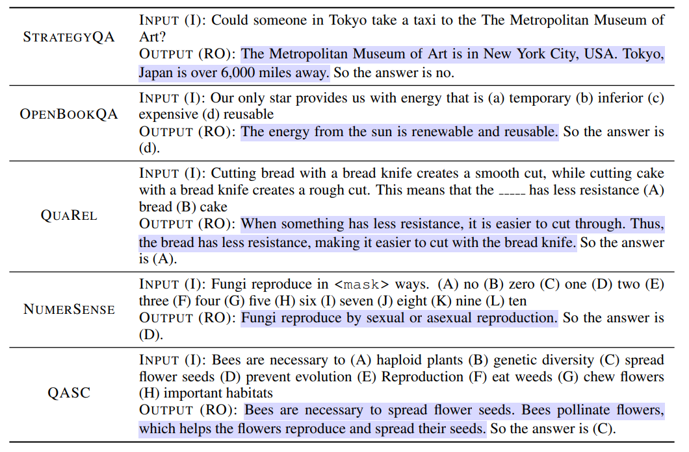
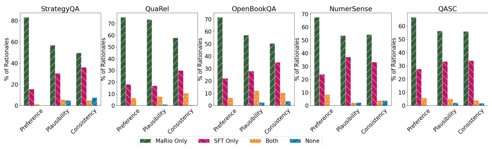

MaRio (Multi-rewArd RatIOnalization) is a method that tailors small-sized LMs (< 1B parameters) to be strong rationalizers, in terms of both improved downstream performance and improved desirable properties of the rationales themselves. Instead of relying on human rationale labelling, MaRio considers a setting where a small LM only has access to rewards that measures factors underlying rationale quality, e.g. a trained LM that judges the plausibility of a rationale and provides a numerical score.
MaRio extends Quark to a multi-reward setup, where generations from an LM are binned according reward values; the LM learns distributions conditioned on 'control-tokens' corresponding to every reward and high-quality generations can be obtained via conditioning on the highest-reward token.
We experiment and provide results on five difficult question-answering datasets: StrategyQA, QuaRel, OpenBookQA, NumerSense and QASC. The table below gives examples from each dataset. We train all our models in an I-RO format, wherein the input to the LM is the question, and the output is the joint generation of the rationale and the predicted answer.
In order to determine whether these generated rationales are of good quality, we focus on three properties that are necessary for any rationale to have, agnostic of the task it is meant for.
First, we note that a rationale should be plausible.
We define plausible as the rationale making sense on its own -- whether it be common, logical or factual sense depending on the dataset at hand.
For example, if a rationale states 'Cows can fly', it is not plausible.
Next, we identify that a rationale should be diverse, where the rationale is clean and not repetitive.
Lastly, we note that a rationale should be consistent with the gold label for the input.
Consistency is important to ensure that a rationale does not spew irrelevant information, and that it supports the gold answer.
Furthermore, we focus on consistency with respect to the gold label, as misleading rationales are unhelpful as both LM justifications, and for human utility.
All of these properties are agnostic of the actual prediction made by the LM.
Since our self-rationalization setup generates a rationale first, followed by its prediction, we aim to generate rationales with good quality, which should ideally improve the answer generated by the LM.
Therefore, we focus on improving self-rationalization along these three properties, as well as on task accuracy.
Along with the above rationale properties, we also consider task correctness as a necessary property of rationales, that they should try to improve over as a byproduct.
We first present human preference studies comparing rationales generated by MaRio and the supervised fine-tuned baseline SFT for all five datasets. For each instance, we ask three distinct annotators from a pool of qualified annotators to compare the two rationales across three settings, for a given question and correct answer pair: plausibility and consistency, which are defined in the same manner as the rewards, and an overall Preference rating. Preference is meant to indicate that the annotators pick the rationale that they would find acceptable for the given question. In the figure below, we plot the % of instances where majority of annotators prefer only MaRio's rationales, only SFT's rationales, both or none. We note human annotators prefer MaRio's only rationales for 83.15%, 75.3%, 71.49%, 67.44% and 66.6% of instances respectively for Strategyqa, QuaRel, OpenBookQA, NumerSense and QASC. Human annotators also find MaRio's rationales to be considerably more plausible and consistent than SFT (We do not perform human studies for diversity and accuracy since they are automatic/straightforward metrics). We use Amazon MTurk for all our human studies.
